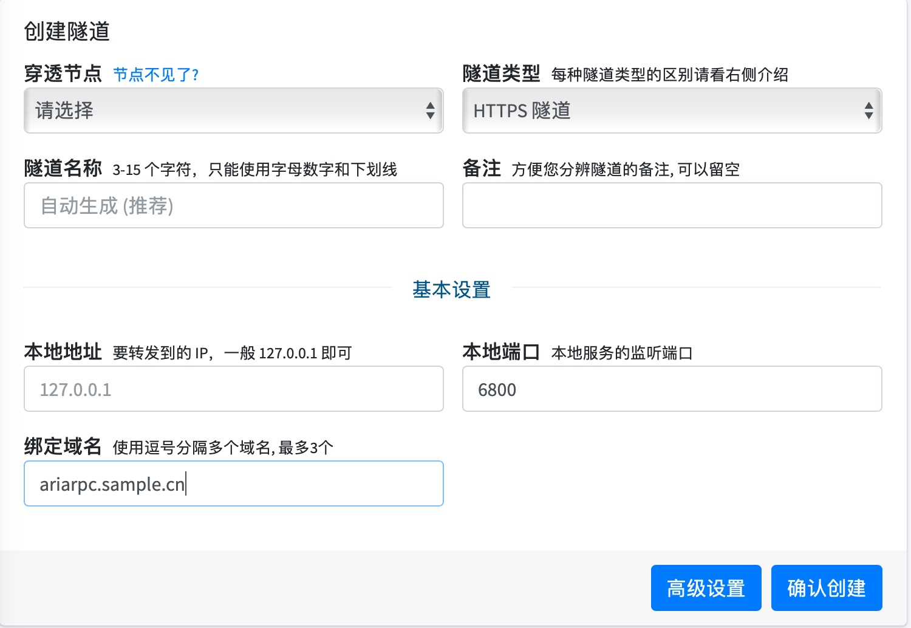

Aria2配置ssl并通过frp映射aria-rpc
title: Aria2配置ssl并通过frp映射aria rpc
date: 2021-02-20 10:32:53
categories: 计算机
tags:
-
Aria2
-
Frp
当AriaNg通过https访问时，ariarpc会强制要求通过https或websocket连接，这时候就需要给aria2配置ssl来开启https访问。
创建Https隧道，申请ssl证书
我是使用的是natfrp创建隧道，创建完通过dnspods将域名解析到natfrp，顺便通过dnspods申请ssl证书
Aria配置ssl证书
1.将dnspods申请的或者其他地方申请的证书下载下来，应该有如下一些文件，我们需要的是Nginx目录下的文件
2.将nginx目录下的两个文件放到aria2的目录，或者其他自己能够找到的地方
3.找到aria2.conf文件，我是通过脚本安装的，文件在/root/.aria2c/目录下，找到如下内容，这是修改之后的内容
# RPC 服务 SSL/TLS 加密, 默认：false
# 启用加密后必须使用 https 或者 wss 协议连接
rpc-secure=true
# 在 RPC 服务中启用 SSL/TLS 加密时的证书文件(.pem/.crt)
rpc-certificate=/root/.aria2c/ariarpc.crt
# 在 RPC 服务中启用 SSL/TLS 加密时的私钥文件(.key)
rpc-private-key=/root/.aria2c/ariarpc.key
⚠️注意：rpc-certificate=/root/.aria2c/ariarpc.crtaria2c.conf中默认的后缀是.pem但是Nginx里的是.crt，所以这里需要修改为.crt
4.修改完成后，重启一下Aria，启动成功说明这里的配置基本没问题了，失败的话注意检查前面的两个文件是否已经放上去，conf里填的路径是否正确
配置Frp
1.创建frp隧道

注意本地端口是6800
2.创建完成后需要启动隧道，详细看natfrp的帮助文档
3.将绑定的域名解析到frp上
4.配置AriaNg
配置完证书之后可以使用websocket协议也可以使用https协议，需要注意连接到端口为443